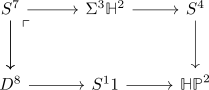
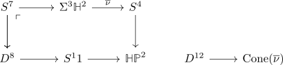
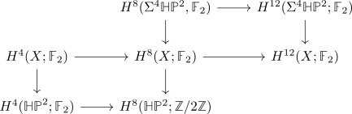

one time iterated hopf map as essential map
Proposition
The one time iterated hopf maps
- $\eta \Sigma \eta: S^4 \rightarrow S^2$
- $\nu \Sigma^3 \nu: S^10 \rightarrow S^4$
- $\sigma \Sigma^7 \sigma: S^22 \rightarrow S^8$
are essential maps
Proof
1)
follows analogously to 2): replace:
- $\mathbb{HP}^2$ by $\mathbb{CP}^2$
- $\mathrm{Sq}^4 \mathrm{Sq}^4$ by $\mathrm{Sq}^2 \mathrm{Sq}^2$
- replace spheres by right dimension
- $\mathrm{Sq}^2 \mathrm{Sq}^2 = \mathrm{Sq}^3 \mathrm{Sq}^1$
2)
assume that $\nu \Sigma^3 \nu: S^{10} \rightarrow S^4$ si nullhomotopic. Then by the universal property of the mapping cone
\begin{displaymath}
\begin{tikzcd}
S^{10} \rar{\Sigma \nu} \dar & S^7 \rar{\nu} \rar & S^4 \\
D^{11} \rar & \mathrm{Cone}(\Sigma^3 \nu} \arrow[]{ru}{}& \\
& \Sigma^3 \mathbb{H}^2
\end{tikzcd}
\end{displaymath}where reduced suspension commutes with mapping cones
then

where $S^11$ is given by the coexact puppe sequence
Then

hence we get two different cofibre sequences
\begin{displaymath}
\begin{tikzcd}
S^{11} \rar & \mathbb{HP}^2 \rar & X \rar & S^{12} \12\
S^{4} \rar & \mathbb{HP}^2 \rar & \Sigma^4 \mathbb{HP}^2 \rar & S^{5} \\
\end{tikzcd}
\end{displaymath}Then consider

Then
\begin{align*}
\mathrm{Sq}^4 \circ \mathrm{Sq}^4
\end{align*}
is an iso and especially nonzero on $H^*(X; \mathbb{F}_2)$
By working out the Adem relation of steenrod operations we get
\begin{align*}
\mathrm{Sq}^4 \mathrm{Sq}^4 = \mathrm{Sq}^7 \mathrm{Sq}^1 + \mathrm{Sq}^6 \mathrm{sq}^2
\end{align*}
and $\mathrm{Sq}^7 \mathrm{Sq}^1 + \mathrm{Sq}^6 \mathrm{Sq}^2 = 0$ has to be $0$ by factorizing through $0$
3)
follows analogously to 2): replace:
- $\mathbb{HP}^2$ by $\mathbb{OP}^2$
- $\mathrm{Sq}^4 \mathrm{Sq}^4$ by $\mathrm{Sq}^{8} \mathrm{Sq}^{8}$
- replace spheres by right dimension
- $\mathrm{Sq}^8 \mathrm{Sq}^8$ by $\mathrm{Sq}^{15} \mathrm{Sq}^{14} \mathrm{Sq}^2 + \mathrm{Sq}^{12} \mathrm{Sq}^4$